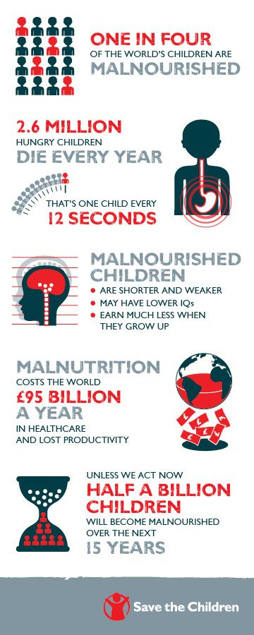
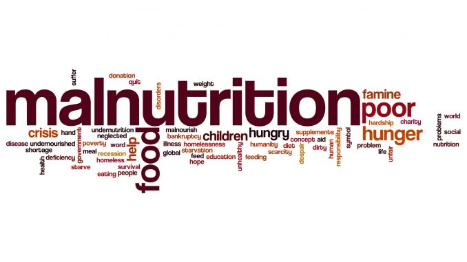
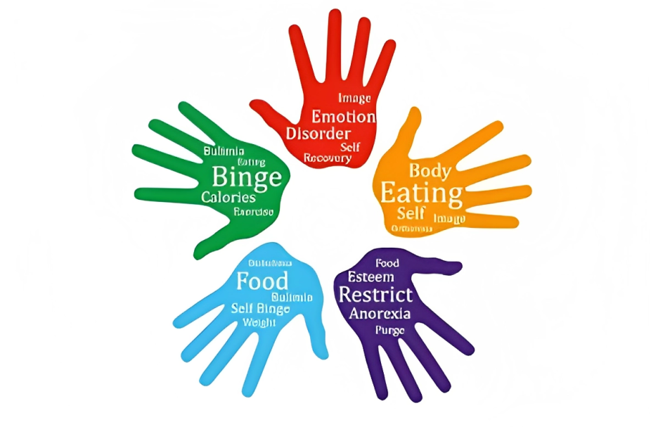

What is MALNUTRITON ?
Malnutrition refers to a condition that arises
when there is an imbalance
between the nutrients a person's body requires for proper growth, development, and maintenance,
and the nutrients they actually consume. It can manifest as both undernutrition and overnutrition,
leading to various health problems.
Malnutrition can have serious health consequences, ranging from impaired physical and cognitive
development in children to increased susceptibility to diseases and reduced productivity in adults.
Addressing malnutrition requires a comprehensive approach that includes improving access to
nutritious foods, promoting healthy dietary practices, enhancing healthcare services,
and addressing socio-economic and environmental factors that contribute to the problem.

Causes of MALNUTRITON
Poverty and Socioeconomic Inequality :
Poverty refers to a condition where individuals or
communities lack the financial resources, capabilities, and access to basic necessities required to meet their fundamental
needs for a decent standard of living. This includes essentials such as food, clean water, shelter, education, and healthcare.
Poverty can be absolute, where people lack the minimum resources needed to survive, or relative, where individuals have fewer
resources and opportunities compared to the majority of the population.
Socioeconomic inequality involves disparities in income, wealth, education, healthcare, and social status within a society.
It's rooted in historical and structural factors, impacting social cohesion and economic development
Both poverty and socioeconomic inequality require comprehensive approaches, including income redistribution, education and
healthcare access, labor market reforms, social programs, and policy changes to create a more equitable and just society.
Limited Access to Nutritious Food :
Many communities lack access to a variety of nutrient-rich foods,
particularly in remote or economically disadvantaged areas. This limited access can result from factors such
as inadequate infrastructure, lack of transportation, and high food prices.
challenges people face in obtaining healthy and nourishing food. This can be due to a lack of stores selling
fresh produce, high prices for nutritious options, remote locations, low income, and insufficient knowledge about healthy eating.
Solutions include community gardens, farmers' markets, mobile food services, and policies that make healthy food more affordable
and accessible.
Inadequate Health and Nutrition Services :
Insufficient access to healthcare and nutrition services,
particularly for maternal and child health, can result in improper prenatal care, inadequate infant feeding practices,
and poor nutritional status among children.
Poor Water, Sanitation, and Hygiene (WASH) Conditions :
Inadequate access to clean water and sanitation facilities
can lead to increased susceptibility to infections and diseases. These conditions can impact nutrient absorption and
contribute to malnutrition.
Climate Change and Environmental Factors :
Climate change-related disruptions to agriculture, such as droughts
and extreme weather events, can affect crop yields and food production. Environmental degradation can also reduce the
availability of nutrient-rich foods.
